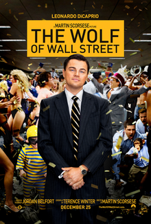

Catch me if you can
- Release date : 25 December 2002
- Ganre : Biographical crime film
- Starring:
- Movie Poster :
- Directed by :Steven Spielberg
- Produced by :
- Walter F. Parkes
- Steven Spielberg
- Running time : 141 minutes
The Wolf of Wall Street
- Release date : December 25, 2013
- Ganre : Biographical crime black comedy film
- Starring:
- Movie Poster :
 - Directed by : Martin Scorsese
- Produced by :
- Running time : 180 minutes
The Pursuit of Happyness
- Release date : December 15, 2006
- Ganre : Biographical drama film
- Starring:
- Movie Poster :
- Directed by : Gabriele Muccino
- Produced by :
- Running time : 117 minutes
Friends with benefits
- Release date : July 22, 2011 (United States)
- Ganre : Romantic comedy film
- Starring:
- Movie Poster :
- Directed by : Will Gluck
- Produced by :
- Jerry Zucker
- Liz Giorzer
- Will Gluck
- Martin Shafer
- Running time : 109 minutes
Project X
- Release date : March 2, 2012
- Ganre : Found footage teen comedy film
- Starring:
- Movie Poster :

- Directed by : Nima Nourizadeh
- Produced by : Todd Phillips
- Running time : 88 minutes